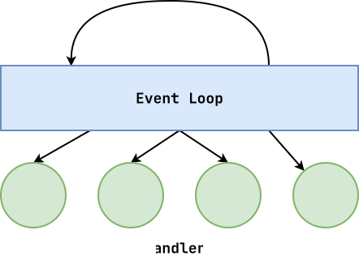

Review: Process Life Cycle¶
-
What is a process?
A process is a loaded instance of a program; it is a unit of allocation (resources, privileges, etc.).

Example: safe_system.py¶
Write a
SafeSystemobject that implements the context manager protocol to create a child process that executes the given command while the parent process runs.''' Version 1 ''' cmd = ['ls', '-l'] pid = fork() # Review: allocate child process if pid == 0: # Review: child try: # Review: change identity os.execvp(cmd[0], cmd) except OSError: # Review: terminate existing process sys.exit(1) else: # Review: parent # Review: deallocate child process _, status = os.waitpid(pid, 0) # Review: status bitmask print(f'{pid} {os.WEXITSTATUS(status)}')Signals: Event-based Programming¶
Signals are a means of notifying a process of an event.
-
Register interest in events (callbacks).
-
When event occurs, interrupt current
process and invoke handler . -
After
handler is executed, resume where we interrupedprocess . -
handler should be short-lived.

Signals: Examples (Fork Bomb)¶
#!/usr/bin/env python3 import os import time # And away we go print(f'{os.getpid()} Spawning children...') for i in range(10): try: pid = os.fork() except OSError: break # Slow it down time.sleep(1)# Watch exponential growth $ watch pstree -u pbui # View process limits $ ulimit -aObservations:
-
With great power comes great responsibility.
-
Denial of Service: overload the system with resource allocation requests!
-
Bounded loop guarantees that we terminate... eventually.
Fix: make sure child exits.
Signals: Examples (Zombies)¶
#!/usr/bin/env python3 import os import signal import sys import time # And away we go print(f'Spawning children...') for i in range(10): match pid := os.fork(): case 0: # Child print(f'Child process: {os.getpid()}') time.sleep(i) sys.exit(i) time.sleep(30) # Parent: Sleep and watch 'ps ux | grep zombies'Observations:
Fix: parent should call wait on all children.
# Fix 1: Wait all print(f'Waiting for children...') for i in range(10): pid, status = os.wait() print(f'Child {pid} exited with {os.WEXITSTATUS(status)}')Observations:
# Fix 2: Wait after signal WaitedChildren = [] def handle_sigchld(signum, frame): pid, status = os.wait() print(f'Child {pid} exited with {os.WEXITSTATUS(status)}') WaitedChildren.append(pid) print() print(f'Registering handler...') signal.signal(signal.SIGCHLD, handle_sigchld) print(f'Spawning children...') for i in range(10): match pid := os.fork(): case 0: # Child print(f'Child process: {os.getpid()}') time.sleep(i) sys.exit(i) while len(WaitedChildren) < 10: print('Waiting...') time.sleep(1)Signals: Examples (Alarm)¶
#!/usr/bin/env python3 import os import signal import sys import time def handle_sigalrm(signum, frame): print(f'Alarm triggered... Killing {pid}!') os.kill(pid, signal.SIGKILL) # Discuss: send signal _, status = os.wait() # Discuss: exit status print(f'Child {pid} exited with {os.WTERMSIG(status)}') sys.exit(0) match pid := os.fork(): case 0: # Child while True: print('Hahahaha') time.sleep(1) case _: # Parent # Discuss: register handler signal.signal(signal.SIGALRM, handle_sigalrm) # Discuss: set alarm signal.alarm(5) while True: print('Waiting...') time.sleep(1) -